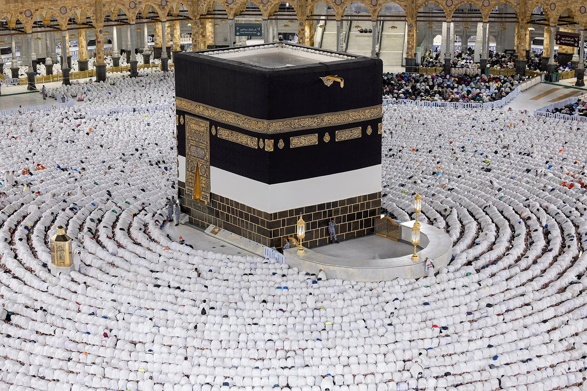

Cara Pindah PIN Haji Khusus ke Travel Lain: Panduan Lengkap Syarat, Prosedur & Biaya

Anda sudah memiliki nomor porsi haji khusus, tetapi merasa pelayanan travel saat ini kurang sesuai harapan — entah karena bimbingan yang minim, biaya yang terus bertambah, atau ingin travel yang lebih sesuai sunnah? Kabar baiknya, Anda tidak perlu mendaftar dari nol. Melalui mekanisme pindah PIN, porsi haji khusus Anda bisa dipindahkan ke penyelenggara (PIHK) lain secara resmi.
Namun banyak jemaah ragu karena khawatir nomor porsinya hangus, tahun keberangkatannya mundur, atau terjebak biaya penalti yang besar. Artikel ini mengupas tuntas cara pindah PIN haji khusus ke travel lain sesuai prosedur resmi Kementerian Agama — mulai dari syarat, dokumen, tahapan, hingga soal biaya.
Apa Itu Pindah PIN Haji Khusus?
Pindah PIN adalah proses pemindahan status pendaftaran calon jemaah haji khusus dari satu Penyelenggara Ibadah Haji Khusus (PIHK) ke PIHK lain di dalam sistem SISKOHAT (Sistem Komputerisasi Haji Terpadu) milik Kementerian Agama Republik Indonesia.
Sederhananya, yang berpindah hanyalah travel penyelenggara yang akan melayani dan memberangkatkan Anda — sementara nomor porsi dan hak keberangkatan tetap menjadi milik Anda. Mekanisme ini legal dan diakomodasi selama ditempuh sesuai jalur resmi.
Apakah Nomor Porsi dan Tahun Keberangkatan Hangus?
Ini kekhawatiran nomor satu jemaah — dan jawabannya melegakan: tidak. Selama pemindahan dilakukan secara legal dan sesuai prosedur, nomor porsi serta tahun estimasi keberangkatan tetap sama. Tidak ada konsekuensi penundaan, karena porsi yang Anda miliki bersifat personal dan melekat pada diri Anda, bukan milik travel.
Dengan kata lain, berpindah travel tidak akan membuat Anda kehilangan masa tunggu yang sudah dijalani. Anda hanya mengganti "siapa yang melayani", bukan "kapan berangkat".
Syarat dan Dokumen yang Diperlukan
Agar proses berjalan lancar, siapkan dokumen-dokumen berikut sejak awal:
- Surat permohonan dan pernyataan pindah dari calon jemaah haji khusus.
- Surat pelepasan dari PIHK asal.
- Surat penerimaan dari PIHK tujuan.
- Surat pertanggungjawaban mutlak dari PIHK asal dan PIHK tujuan.
- Fotokopi KTP dan Kartu Keluarga calon jemaah.
- Fotokopi SPPH, bukti BPIH, dan slip transfer setoran awal BPIH Khusus.
Prosedur Pindah PIN Haji Khusus Langkah demi Langkah
Secara umum, alur resmi pindah PIN melalui SISKOHAT adalah sebagai berikut:
- Ajukan permohonan ke PIHK asal. Jemaah membuat surat permohonan pindah yang mencantumkan nama, nomor porsi, nomor telepon, nama PIHK yang dituju, dan alasan pindah.
- PIHK asal menerbitkan surat persetujuan/pelepasan kepada PIHK tujuan, disertai penyerahan bukti asli setoran awal dan/atau bukti lunas BPIH Khusus berikut bukti transfernya.
- PIHK tujuan membuat surat pengantar pindah PIHK kepada Kantor Kementerian Agama terdekat sesuai domisili jemaah.
- Pengajuan dokumen dan verifikasi. Jemaah dan/atau petugas PIHK menyerahkan surat permohonan beserta seluruh dokumen pendukung untuk diverifikasi.
- Kemenag menerbitkan surat pindah porsi ke PIHK baru. Setelah ini, data jemaah resmi berpindah dan pelayanan dilanjutkan oleh PIHK tujuan.
Biaya Pindah PIN: yang Resmi vs Penalti Travel
Inilah bagian yang paling sering menimbulkan kebingungan. Secara aturan, tidak ada biaya resmi yang dipungut Kementerian Agama untuk proses pindah PIN, dan PIHK pun tidak diperbolehkan memungut biaya perpindahan dari jemaah.
Namun dalam praktik di lapangan, sebagian PIHK asal menerapkan biaya administrasi atau penalti sesuai kebijakan internal mereka sebagai syarat melepas jemaah. Besarannya bervariasi dan tidak jarang cukup signifikan. Karena itu, sebelum memutuskan pindah, tanyakan sejak awal apakah travel asal mengenakan penalti, dan cari travel tujuan yang tidak membebani Anda dengan biaya tambahan.
Hal Penting yang Perlu Diperhatikan
- Pindah PIN umumnya hanya boleh satu kali. Ketentuan ini menjaga ketertiban data jemaah dalam SISKOHAT, jadi pertimbangkan travel tujuan dengan matang.
- Pastikan seluruh proses legal dan tercatat di Kemenag. Hindari "jalur belakang" yang menjanjikan proses instan namun tidak resmi.
- Simpan seluruh bukti asli setoran dan dokumen. Ini melindungi hak Anda bila terjadi sengketa dengan travel asal.
- Pilih PIHK tujuan yang berizin resmi dan memiliki rekam jejak baik, agar perpindahan justru meningkatkan kualitas pelayanan Anda.
Pindah PIN Gratis Tanpa Penalti Bersama Sahabat Haji
Bagi Anda yang ingin memindahkan porsi haji khusus dengan tenang, Nahdi Tour merekomendasikan Sahabat Haji — konsorsium travel haji yang menyelenggarakan ibadah sesuai sunnah. Melalui layanan ini, proses pindah PIN dibantu hingga tuntas secara gratis, tanpa biaya penalti, sehingga Anda bisa berpindah tanpa beban tambahan.
Tim kami mendampingi setiap tahap administrasinya, dari surat permohonan hingga penerbitan surat pindah porsi di Kemenag, dengan pelayanan yang amanah dan transparan.
Pertanyaan yang Sering Diajukan
Apakah pindah PIN membuat nomor porsi hangus?
Tidak. Selama sesuai prosedur resmi lewat SISKOHAT, nomor porsi dan estimasi tahun keberangkatan tetap sama karena porsi milik jemaah, bukan travel.
Berapa biaya resmi pindah PIN haji khusus?
Tidak ada biaya resmi ke Kemenag dan PIHK tidak boleh memungut biaya perpindahan. Namun sebagian PIHK asal menerapkan penalti/biaya administrasi sesuai kebijakan mereka.
Apa saja dokumen yang dibutuhkan?
Surat permohonan jemaah, surat pelepasan PIHK asal, surat penerimaan PIHK tujuan, surat pertanggungjawaban mutlak, fotokopi KTP & KK, serta SPPH, BPIH, dan slip setoran awal.
Berapa kali boleh pindah PIN?
Umumnya hanya satu kali, demi menjaga ketertiban data di SISKOHAT.
Apakah tahun keberangkatan berubah?
Tidak, selama prosedur ditempuh secara resmi. Yang berubah hanya travel penyelenggaranya.
Kesimpulan
Pindah PIN haji khusus adalah hak jemaah yang dijamin selama ditempuh melalui prosedur resmi Kementerian Agama. Nomor porsi dan tahun keberangkatan Anda aman — yang berpindah hanyalah travel yang melayani. Kunci suksesnya adalah melengkapi dokumen, mengikuti alur SISKOHAT, dan memilih PIHK tujuan yang amanah serta tidak membebani Anda dengan penalti.
Ingin berpindah ke travel yang melayani sesuai sunnah tanpa biaya penalti? Konsultasikan rencana pindah PIN Anda dengan Nahdi Tour, atau pelajari dulu informasi lengkap seputar antrian haji khusus dan cara memilih travel yang resmi dan terpercaya.